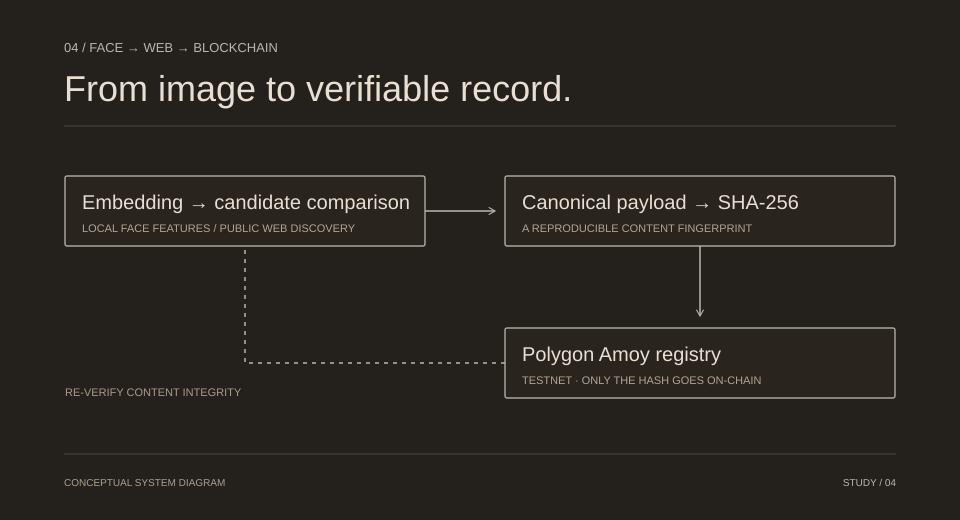

04 / COMPUTER VISION & CONTENT FINGERPRINTS
Face → Web → Blockchain
A CLI study connecting face embeddings, web discovery, candidate comparison, and content-fingerprint verification on the Polygon Amoy testnet.

01 / CONTEXT
The problem worth solving.
A discovered web result can change after it is inspected. This project explores linking a candidate match to a reproducible content fingerprint and checking that fingerprint later.
02 / ARCHITECTURE
How the pieces connect.
A local face embedding feeds a Google Lens discovery path through SerpApi. Candidate images are compared with cosine similarity. A canonical JSON payload is hashed and registered through a Solidity contract on Polygon Amoy, with re-verification and a tamper demonstration.
- 01Face embedding
- 02Web candidate search
- 03Canonical SHA-256
- 04Testnet registry
03 / CONTRIBUTION
What I built.
- Connected face detection and embeddings with web discovery and candidate re-checking.
- Canonicalized selected result metadata before generating a SHA-256 fingerprint.
- Implemented a testnet registry path and a CLI re-verification/tamper demonstration.
04 / ENGINEERING CHOICES
The decisions behind it.
Fingerprint, not photograph
Only a bytes32 content hash is stored on-chain. The image is not uploaded to the contract.
Similarity is conditional
A configurable similarity threshold is a comparison rule, not proof of identity. Quality, pose, and age can affect matching.
Keep the scope visible
Offline mock search and live discovery are separate paths. A mock run is not evidence of an actual web discovery or blockchain transaction.
05 / BOUNDARIES
What this does—and what needs care.
This is a CLI prototype on a test network, with external search quotas and inaccessible/private social-page limits. On-chain integrity of a hash does not certify identity, consent, ownership, or the truth of the underlying content.
This case study is grounded in the public repository’s README, checked 1 November 2026. It describes the implementation; it is not an independent audit of the running project.
Read the technical sourceTermWise AI
03 / GET IN TOUCH
AN IDEA, AN OPPORTUNITY, A CONVERSATION.